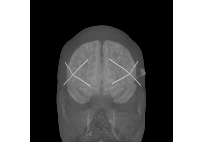
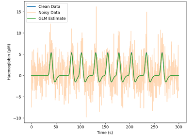
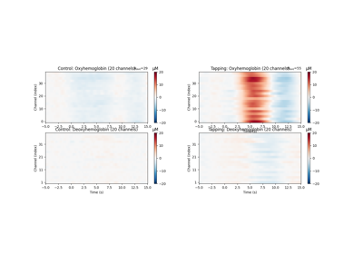
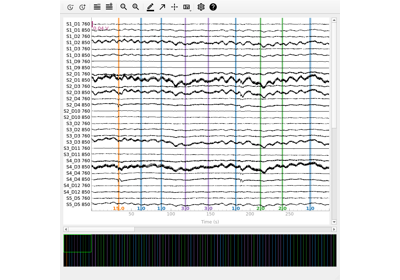
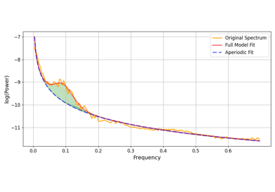
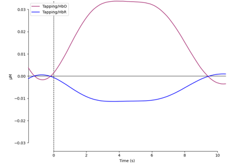

Examples¶
The examples gallery provides working code samples demonstrating various analysis and visualization techniques.
Each example includes a binder link at the base of the page. Clicking on the binder link will allow you to run the example code in your browser, upload data, visualise output, all without downloading any code to your computer.
Warning
These examples sometimes use simulations or shortcuts (such as intentionally adding noise to recordings) to illustrate a point. Use caution when copy-pasting code samples.
Analysis examples¶

Importing Data From fNIRS Devices
Importing Data From fNIRS Devices


GLM Analysis (Simulated)



Waveform Averaging Analysis


SNIRF Support in MNE



Mayer Wave Parametrisation



Importance of Controls and Parameter Selection
Importance of Controls and Parameter Selection